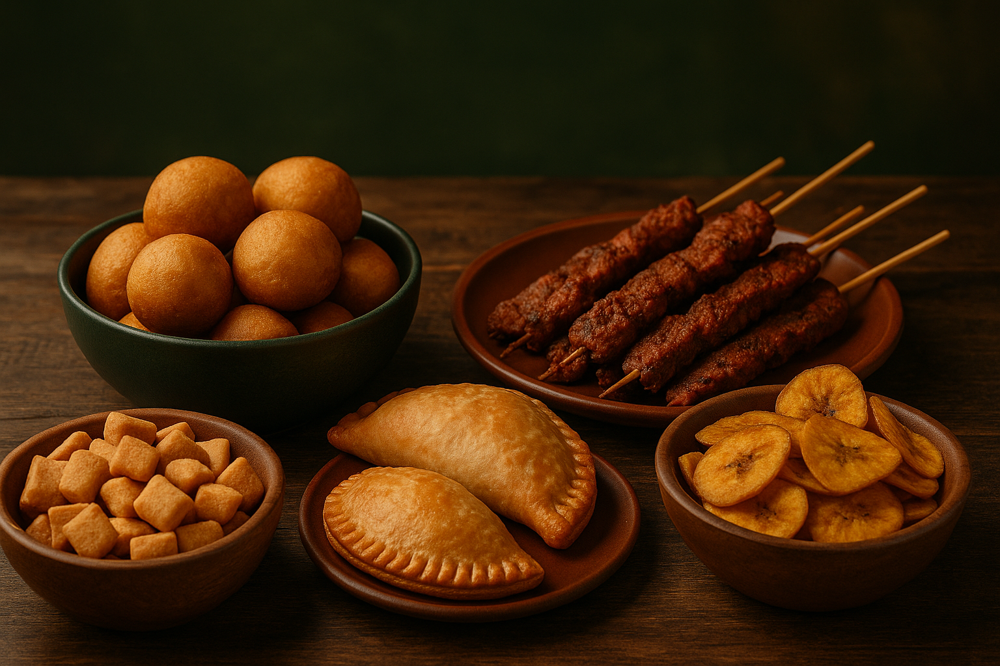
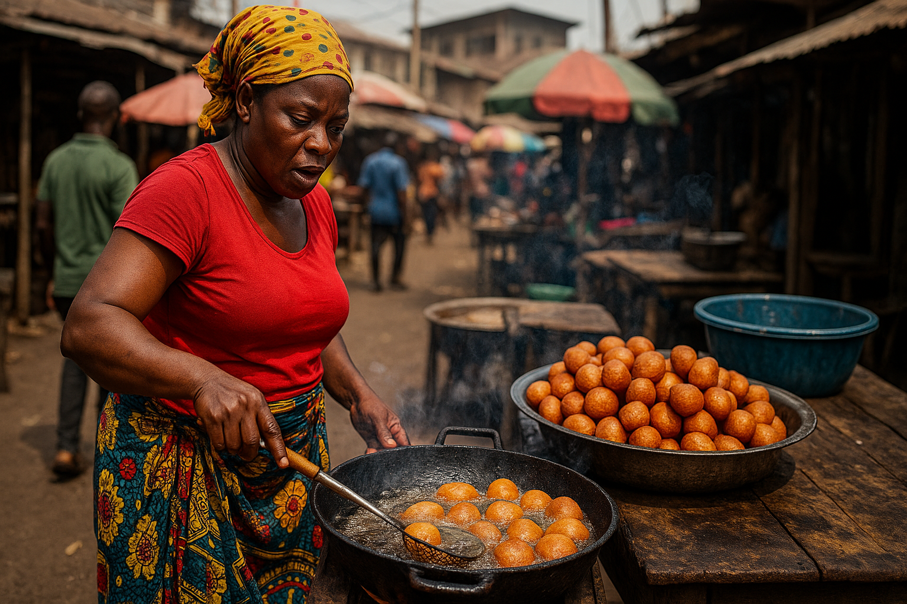

Naija Snacks
Welcome
Welcome to the ultimate street food adventure. From the sizzling aroma of Suya at a busy junction to the sweet crunch of freshly fried Chin Chin at your favorite market stall, Nigerian street food is more than just a snack it's a cultural story told through flavor.
Get ready to explore, taste, and fall in love with the vibrant street eats that bring Nigerians together every day.
The Street Food Journey
Street food in Nigeria is not just eaten, it is felt. It is the heartbeat of a nation told through scent, sound, and spice. Beneath the sizzle of hot oil and the smoky dance of charcoal flames lies a living archive of memory and meaning. Here, mothers rise with dawn’s hush to knead age-old recipes into existence, while vendors, with practiced hands, sculpt dough and dreams into golden bites of comfort. Their fires are altars, their ladles instruments of heritage. The streets become kitchens, and every corner becomes a story waiting to be tasted.
In the quiet of early mornings and the pulse of busy nights, the air is thick with the aroma of hope. Suya smoke spirals like incense. Puff-puff sings in oil like a lullaby. Boli blushes with flame as if kissed by the sun. And around each stall, people gather not just to eat, but to connect. A stranger offers you a piece; a child tugs at a mother’s wrapper for one more taste. These are not mere transactions they are shared moments woven into the fabric of daily life.
In a world that rushes forward, Naija snacks stand still, rooted. They do not follow trends they carry tradition. Each bite is a time capsule, each flavor a fragment of ancestry. To savor them is to remember, to belong, to become. Whether you’re born of this soil or just passing through, one mouthful of chin chin, suya, or puff-puff and suddenly you are no longer a visitor. You are home.
Beneath the rising sun of an awakening town, an Igbo woman stands by her bubbling pot of oil, her hands expertly shaping puff-puff batter passed down through generations. The golden balls rise and dance in the oil, each one a testament to patience, precision, and passion. This isn't just breakfast it's heritage in motion. Her face carries the calm of experience, her movements fluid like a ritual honed over decades.
In many southeastern Nigerian communities, especially among the Igbo, food is more than sustenance it’s identity. Puff-puff, soft and airy on the inside with a crisp edge, isn’t simply a sweet treat. It’s the smell of home before school, the joy of holidays, the comfort of grandmother’s hands. The woman at the roadside isn’t just frying dough; she’s preserving memory, flavor, and tradition in every batch she lifts from the oil.
Children gather around her stall, drawn by the irresistible aroma. Commuters pause to grab a quick bite wrapped in brown paper. Travelers stop not only for the taste but for the story behind it. This scene so ordinary yet so rich is a daily masterpiece. Her oil crackles like applause, celebrating the quiet strength of Nigerian women who rise each day to feed a nation, body and soul.
To watch her work is to witness legacy unfold. In every puff-puff she sells, there is dignity, history, and the enduring sweetness of home.
Voices from the Street
“No matter where I go, puff-puff always brings me back to childhood.” — Chinedu, Lagos
“Suya is not just food, it’s a vibe!” — Amaka, Abuja
“Boli with groundnut? That's my daily joy.” — Ibrahim, Ibadan
“No better breakfast than hot akara and pap.” — Uchenna, Enugu